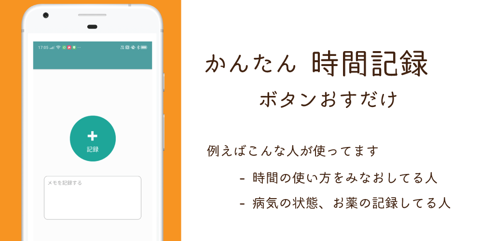
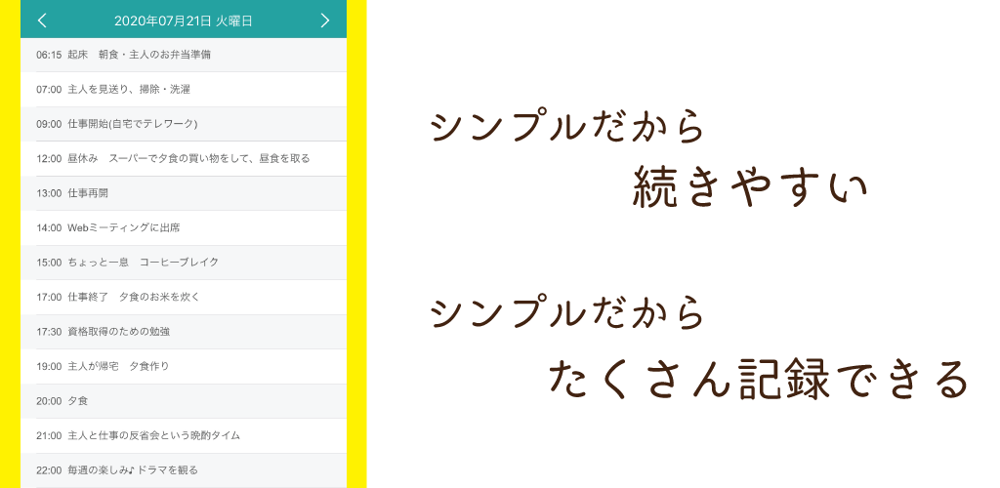

Many people in this app are using the app to record illness symptoms, taking medicine
時間記録アプリなのでいろんな使い方をしているユーザーさんがいるのですが
- 何時に薬を飲んだかの記録
- 病気の症状の記録
…の記録にアプリを使用している方が多くおられます。
ここではそんな方へ使い方のヒントをお伝えします。
自身の行動の反省に
「薬を決められた時間に飲む」といった記録をとるのは最初に行うことですが
１日の行動記録をつけていくことで「自分の抱えている病気にとって良くない行動」をしていることに気づけることがあります。
（例えば寝る時間が遅れ気味、など）
またさらに一歩進んだ考えでは「どうしてその行動をとってしまうのか」を自分自身で考えるきっかけになります。
（例：寝る直前に小さな仕事をしてしまう癖がある、など）
そこから少しづつでも自分の悪い習慣を直してことができます。
お医者さんの診察で…
お医者さんの診察の際に病状などを聞かれますが、その場ですぐに
- 何時に薬を飲んだかの記録
- 病気の症状の記録
…を詳細に伝えるのは難しいです。
そのため記録をつけておき、できることなら診察前にさっと目を通し
お医者さんに何を伝えたいか、をまとめておけるとなお良いでしょう。
なかなか過去に起きたことを詳細に伝えるのは難しいです。
また担当のお医者様が変わった際に手元にかなり昔の記録から手元にあるため自分の状況を伝えやすいです。
その他に記録しておくと良いものは
直接の病気とは関係なくても安定した生活習慣は病気になりにくく、なったとしても回復を助けてくれます。
そのため以下のような生活の記録はつけておき、生活習慣が乱れているようなら改善していくといいでしょう。
- 食事の記録
- 運動の記録
- 就寝時刻の記録
アプリでつけた記録で客観的に自分の生活を見直すことができ、自分自身で悪い習慣を直していけます。
一度自分の行動をアプリで記録することを試してみてください。
